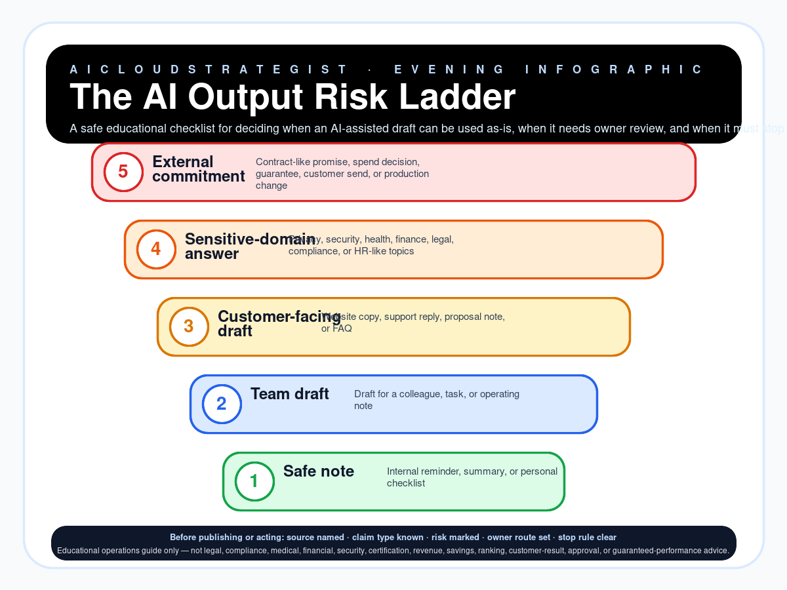

Evening publication · AI governance
The AI Output Risk Ladder
A safe educational checklist for deciding when an AI-assisted draft can be used as-is, when it needs owner review, and when it must stop before becoming a business action.

Five output-risk levels
| Level | Name | Use | Review | Stop rule |
|---|---|---|---|---|
| 1 | Safe note | Internal reminder, summary, or personal checklist | Self-check sources and wording before saving | No stop if it stays internal and non-sensitive |
| 2 | Team draft | Draft for a colleague, task, or operating note | Named owner checks facts and missing context | Stop if the draft assigns blame or changes process without owner consent |
| 3 | Customer-facing draft | Website copy, support reply, proposal note, or FAQ | Accountable owner checks claims, prices, scope, exclusions, and proof boundary | Stop if it mentions results, clients, savings, rankings, or approvals without evidence |
| 4 | Sensitive-domain answer | Privacy, security, health, finance, legal, compliance, or HR-like topics | Route to the right accountable owner or qualified adviser before use | Stop if it could be interpreted as professional advice or a formal compliance/security decision |
| 5 | External commitment | Contract-like promise, spend decision, guarantee, customer send, or production change | Formal approval path before action; keep source, reviewer, date, and final text | Stop unless the owner, authority, payment, risk, and audit trail are explicit |
Five checks before an AI output becomes an action
- Source named: The answer points to a visible source, owner note, approved record, or labelled assumption.
- Claim type known: The draft separates education, opinion, internal benchmark, demo, and real approved proof.
- Risk domain marked: Brand, customer-specific, privacy, security, legal, pricing, payment, or production risk is labelled.
- Owner route set: A named human owner can approve, edit, pause, or reject before external action.
- Stop rule clear: The draft says what must not be sent, automated, paid for, or promised without evidence.
Truth boundary
Educational operations guide only — not legal, compliance, medical, financial, security, certification, revenue, savings, ranking, customer-result, approval, or guaranteed-performance advice.